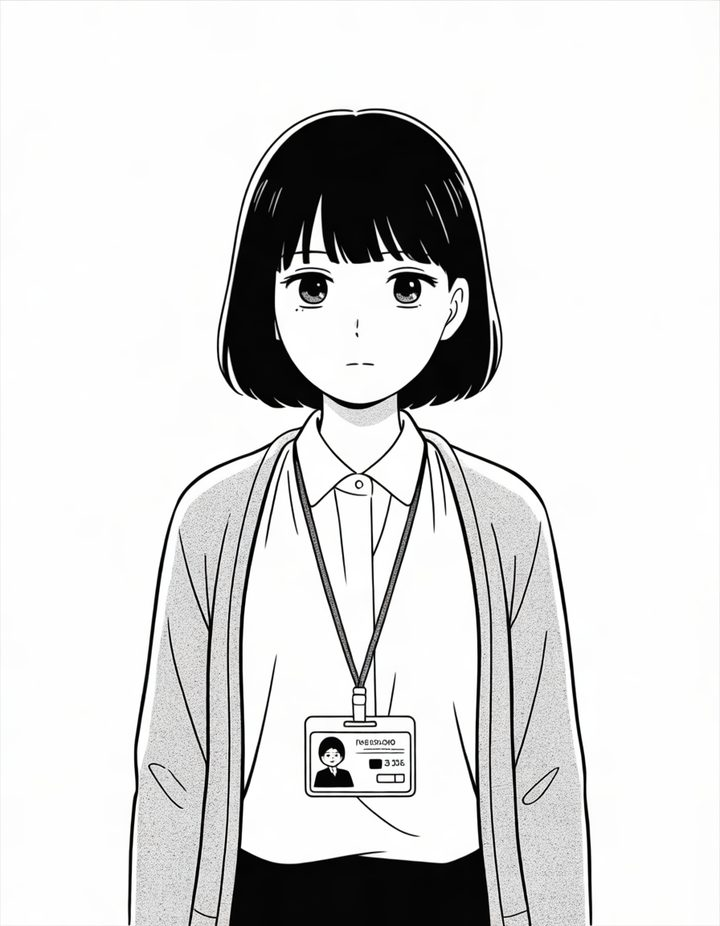
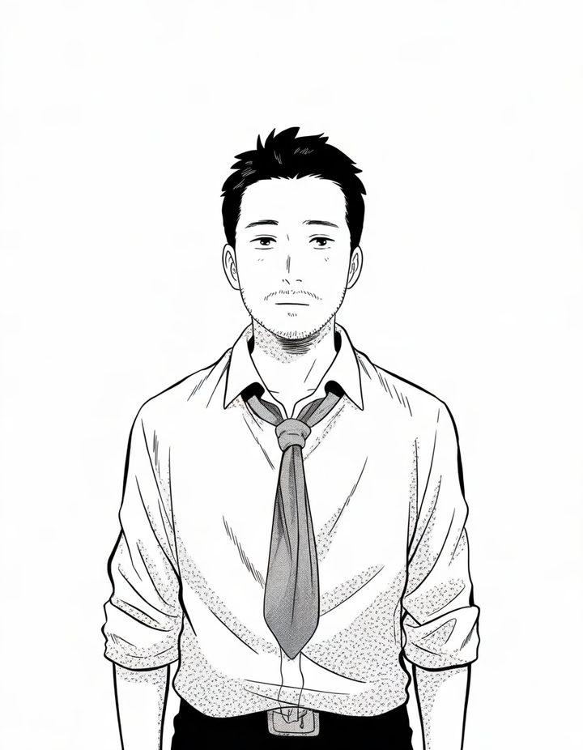
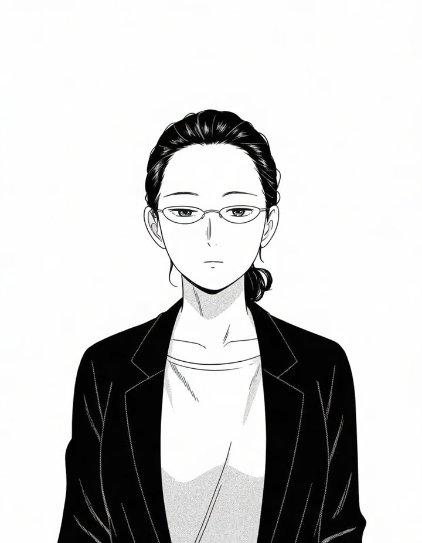
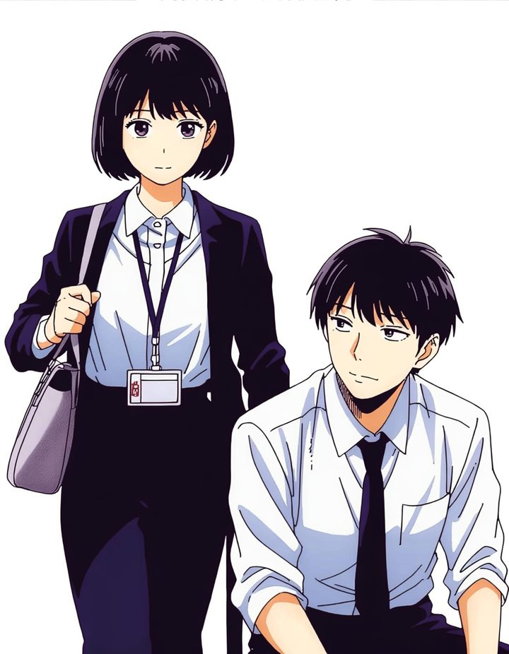
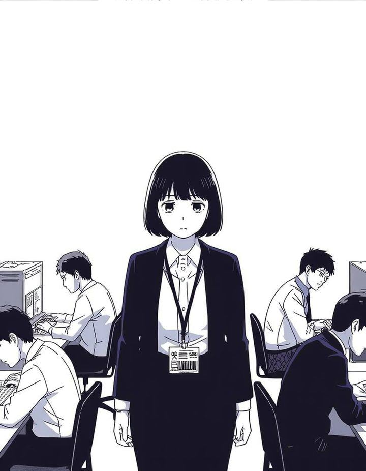
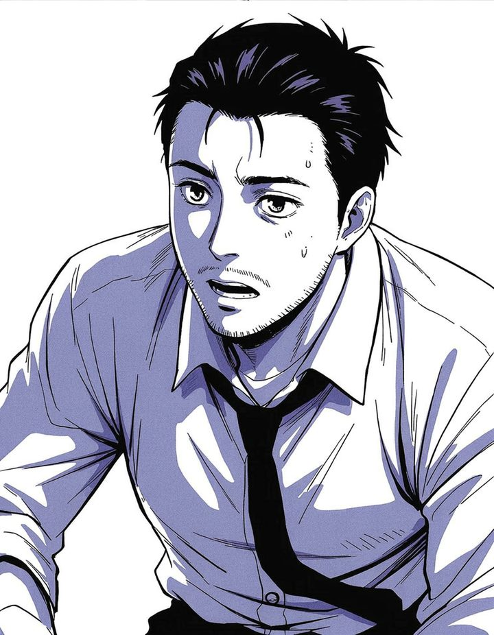
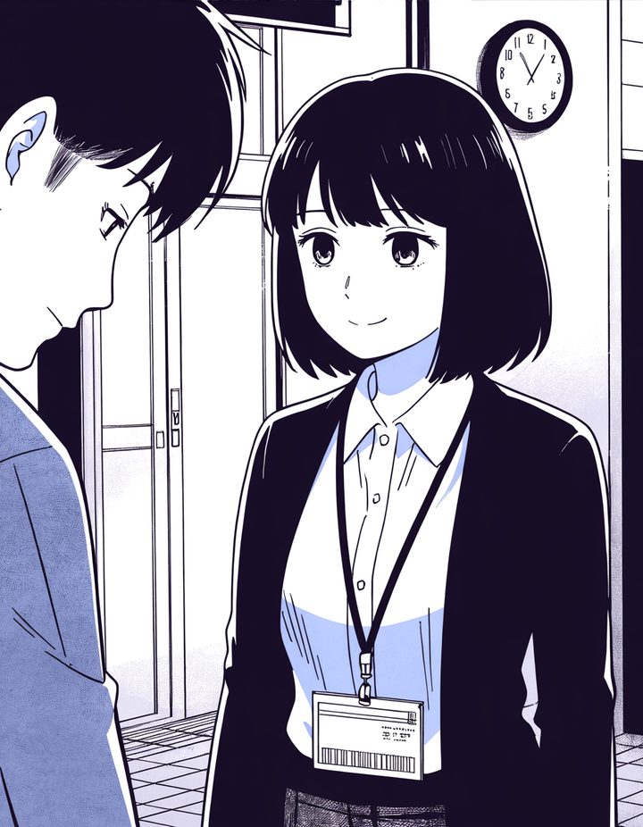
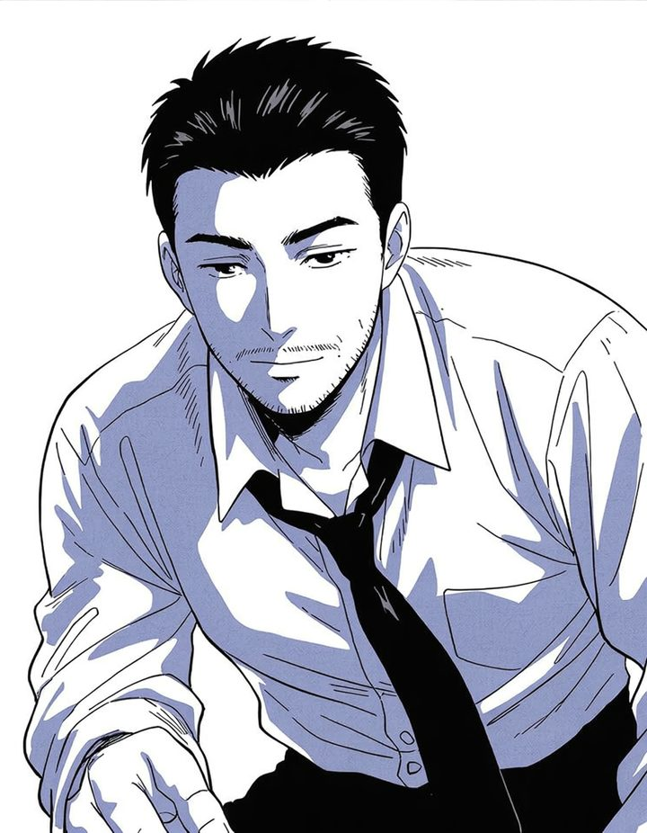
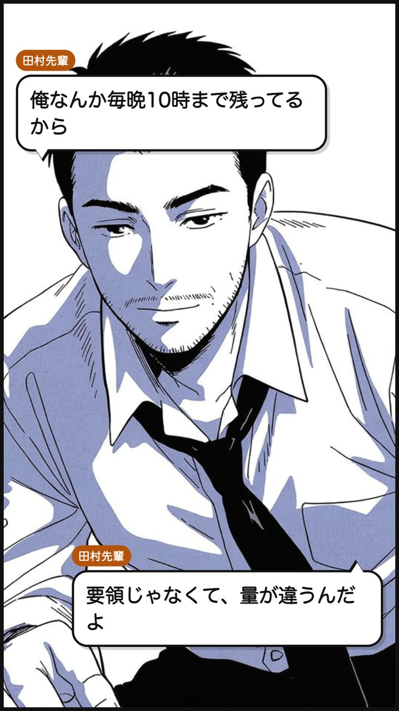
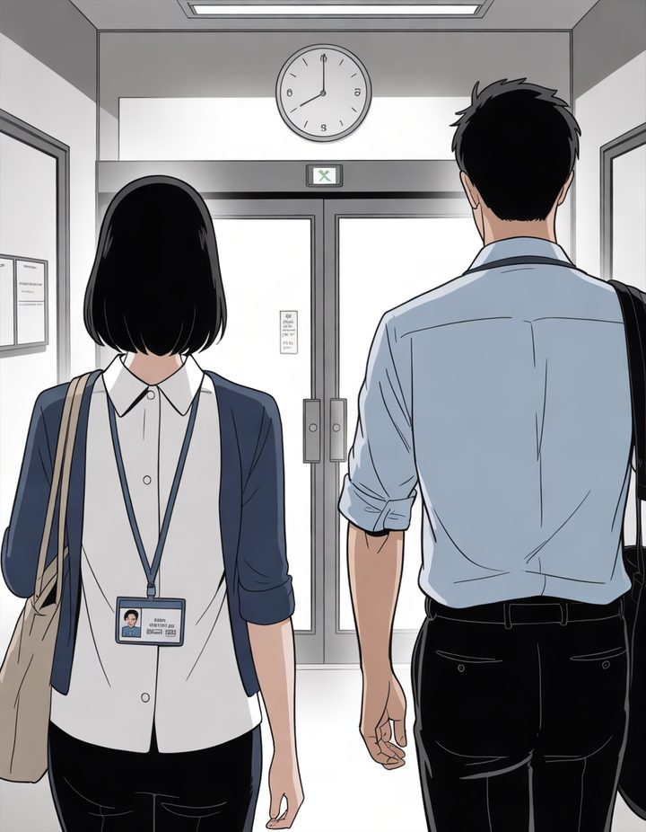

あらすじ1行から、8コマ・3人・50.3秒の縦型動画まで。工程・失敗・測った数字を全部置いています。
まず、できたものを見てください。音が出ます。
1080×1920 / 50.3秒 / 10.1MB / 8コマ / 15カット
台本（script.json）を置いた状態から、node make.js --最初から を1回。出た数字がこれです。
| 工程 | やっていること | かかった時間 |
|---|---|---|
| コマ絵 | 8コマを画像生成で描く | 186.4秒 |
| 吹き出し | セリフ・ナレーションをブラウザで重ねる（30枚） | 5.7秒 |
| 声 | セリフとナレーション15本を読み上げる | 11.0秒 |
| 組み立て | 寄り・BGM・音量をそろえて書き出す | 102.2秒 |
| 合計 | あらすじ側から動画まで | 305.3秒（5.1分） |
セリフだけ直したいときは node 5_build.js --音だけ で9.0秒。コマ絵を描き直さないぶん、言い回しの手直しが軽くなります。
ここが崩れると全コマ崩れます。だから最初にこの3枚を作って、目で見てから先へ進みます。







日本語を画像生成に描かせると崩れます。だから絵は絵、文字は文字で別に作って、あとから重ねます。 こうすると、セリフを言い換えても絵を描き直さずに済みます。


最後のコマを「出口へ歩いていく後ろ姿」にしようとしました。 顔の参照画像を渡すと必ず顔がこちらを向くので、参照を外し、打ち消し語も足しました。それでも後頭部なのに体は正面を向いた絵になりました。

3回やり直してもそろわなかったので、絵を粘るのをやめて、台本の側を書き換えました。後ろ姿のコマをやめて、別の構図にしています。
登場人物の立ち絵を画風の参照としても渡していたせいでした。立ち絵の構図ごと全コマにコピーされていたのです。 画風の参照をやめて、寄り引きを文の先頭に置き、打ち消し語に「正面のバストアップ」を足したら、引きも寄りも肩越しも出るようになりました。
絵と文字を1枚に焼いてから拡大していたからです。文字を透明の別レイヤーにして、絵だけを寄せて、文字は動かさないようにしました。
声はMacに最初から入っている読み上げ機能です。日本語の声が9種類あるので、登場人物ごとに変えられます。
数字の読みは心配でしたが、測ったら大丈夫でした。同じ声・同じ速さで読ませて長さを比べています。
| 読ませた文字 | 長さ | 判定 |
|---|---|---|
| 1260件 | 1.902667秒 | 完全に同じ長さ＝漢数字と同じ読み方 |
| 千二百六十件 | 1.902667秒 | |
| いちにいろくぜろけん | 2.142500秒 | ばらばら読みなら、この長さになるはず |
BGMもffmpegで自分で作りました（4つの和音を32秒で回すだけ）。配布元の決まりを確認しなくていいのが楽です。 喋っている間はBGMが自動で下がります。BGMだけを取り出して測ると15.3dB下がっていました（無音の間 -36.5dB → 喋っている間 -51.8dB）。